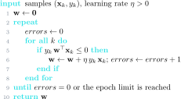

augmented by a 1) from labelled samples: whenever a sample is misclassified,
augmented by a 1) from labelled samples: whenever a sample is misclassified,  ; if the classes are linearly separable the algorithm converges in a finite number of steps.
; if the classes are linearly separable the algorithm converges in a finite number of steps.Method
Two classes, labels , augmented vectors . Decide  if . A sample is correct iff . The perceptron criterion is minimised by gradient descent, one sample at a time.
if . A sample is correct iff . The perceptron criterion is minimised by gradient descent, one sample at a time.
Algorithm

Convergence
If some separates the data with margin  (, ) and , the number of updates is at most (Novikoff). Multi-class: one weight vector per class, update the true class up and the wrongly winning class down.
(, ) and , the number of updates is at most (Novikoff). Multi-class: one weight vector per class, update the true class up and the wrongly winning class down.
Intuition
Every mistake tilts the boundary a little towards the right side of the misclassified pixel.
Pitfall
On non-separable data (almost always, in remote sensing) the perceptron never stops oscillating; one stops after a fixed number of epochs or uses a decreasing learning rate, or a multilayer network.